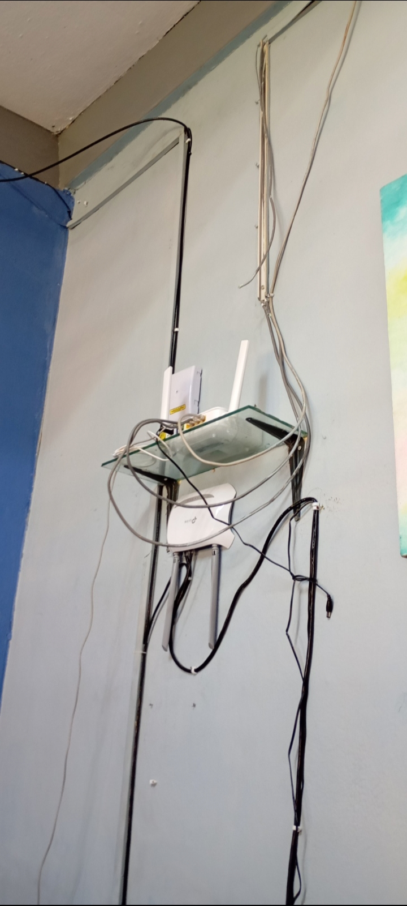

¿QUE SON?
Son un conjunto de maquinas o dispositivos en la cual están interconectados mediante cables. Ya que de esta manera se pueden compartir datos y acceder a internet. Una ventaja que tienen las redes alámbricas es que son mas rápidas que las inalámbricas y pues estas redes son mas comunes en redes LAN.

volver al menu